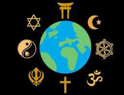

The Religions with the Most Followers
Although the number of people who follow a religion has decreased in recent decades, 82.8% of the global population still identifies with one of the world’s major religions. Here’s a breakdown of the most popular religions, ranked by their following as a percentage of the world’s population: